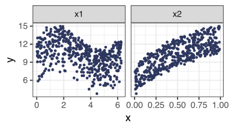
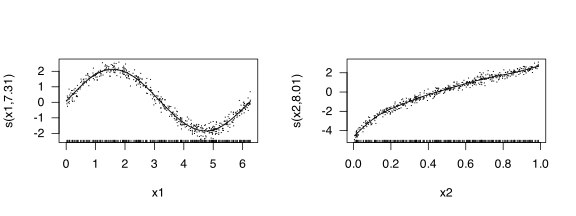
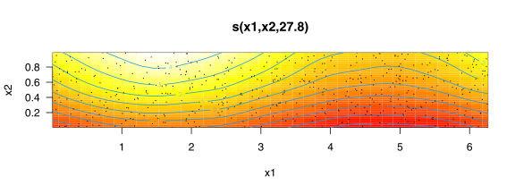
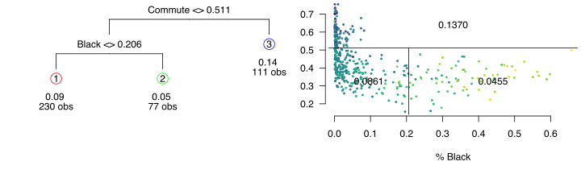

13 GAMs and Trees
Stat 406
Geoff Pleiss, Trevor Campbell
Last modified – 08 October 2024
\[
\DeclareMathOperator*{\argmin}{argmin}
\DeclareMathOperator*{\argmax}{argmax}
\DeclareMathOperator*{\minimize}{minimize}
\DeclareMathOperator*{\maximize}{maximize}
\DeclareMathOperator*{\find}{find}
\DeclareMathOperator{\st}{subject\,\,to}
\newcommand{\E}{E}
\newcommand{\Expect}[1]{\E\left[ #1 \right]}
\newcommand{\Var}[1]{\mathrm{Var}\left[ #1 \right]}
\newcommand{\Cov}[2]{\mathrm{Cov}\left[#1,\ #2\right]}
\newcommand{\given}{\ \vert\ }
\newcommand{\X}{\mathbf{X}}
\newcommand{\x}{\mathbf{x}}
\newcommand{\y}{\mathbf{y}}
\newcommand{\P}{\mathcal{P}}
\newcommand{\R}{\mathbb{R}}
\newcommand{\norm}[1]{\left\lVert #1 \right\rVert}
\newcommand{\snorm}[1]{\lVert #1 \rVert}
\newcommand{\tr}[1]{\mbox{tr}(#1)}
\newcommand{\brt}{\widehat{\beta}^R_{s}}
\newcommand{\brl}{\widehat{\beta}^R_{\lambda}}
\newcommand{\bls}{\widehat{\beta}_{ols}}
\newcommand{\blt}{\widehat{\beta}^L_{s}}
\newcommand{\bll}{\widehat{\beta}^L_{\lambda}}
\newcommand{\U}{\mathbf{U}}
\newcommand{\D}{\mathbf{D}}
\newcommand{\V}{\mathbf{V}}
\]
GAMs
Last time we discussed smoothing in multiple dimensions.
Here we introduce the concept of GAMs (G eneralized A dditive M odels)
The basic idea is to imagine that the response is the sum of some functions of the predictors:
\[\Expect{Y \given X=x} = \beta_0 + f_1(x_{1})+\cdots+f_p(x_{p}).\]
Note that OLS is a GAM (take \(f_j(x_{j})=\beta_j x_{j}\) ):
\[\Expect{Y \given X=x} = \beta_0 + \beta_1 x_{1}+\cdots+\beta_p x_{p}.\]
Gams
These work by estimating each \(f_i\) using basis expansions in predictor \(i\)
The algorithm for fitting these things is called “backfitting” (very similar to the CD intuition for lasso):
Center \(\y\) and \(\X\) .
Hold \(f_k\) for all \(k\neq j\) fixed, and regress \(\X_j\) on \((\y - \widehat{\y}_{-j})\) using your favorite smoother.
Repeat for \(1\leq j\leq p\) .
Repeat steps 2 and 3 until the estimated functions “stop moving” (iterate)
Return the results.
Very small example
library (mgcv)set.seed (12345 )<- 500 <- tibble (x1 = runif (n, 0 , 2 * pi),x2 = runif (n),y = 5 + 2 * sin (x1) + 8 * sqrt (x2) + rnorm (n, sd = .25 )pivot_longer (simple, - y, names_to = "predictor" , values_to = "x" ) |> ggplot (aes (x, y)) + geom_point (col = blue) + facet_wrap (~ predictor, scales = "free_x" )

Very small example
Smooth each coordinate independently
<- gam (y ~ s (x1) + s (x2), data = simple)# s(z) means "smooth" z, uses spline basis for each with ridge penalty, GCV plot (ex_smooth, pages = 1 , scale = 0 , shade = TRUE , resid = TRUE , se = 2 , las = 1 )
(Intercept) s(x1).1 s(x1).2 s(x1).3 s(x1).4 s(x1).5
10.2070490 -4.5764100 0.7117161 0.4548928 0.5535001 -0.2092996

Wherefore GAMs?
If
\(\Expect{Y \given X=x} = \beta_0 + f_1(x_{1})+\cdots+f_p(x_{p}),\)
then
\[
R_n^{(\mathrm{GAM})} =
\underbrace{\frac{C_1^{(\mathrm{GAM})}}{n^{4/5}}}_{\mathrm{bias}^2} +
\underbrace{\frac{C_2^{(\mathrm{GAM})}}{n^{4/5}}}_{\mathrm{var}} +
\sigma^2.
\] Compare with OLS and non-additive local smoothers:
\[
R_n^{(\mathrm{OLS})} =
\underbrace{C_1^{(\mathrm{OLS})}}_{\mathrm{bias}^2} +
\underbrace{\tfrac{C_2^{(\mathrm{OLS})}}{n/p}}_{\mathrm{var}} +
\sigma^2,
\qquad
R_n^{(\mathrm{local})} =
\underbrace{\tfrac{C_1^{(\mathrm{local})}}{n^{4/(4+p)}}}_{\mathrm{bias}^2} +
\underbrace{\tfrac{C_2^{(\mathrm{local})}}{n^{4/(4+p)}}}_{\mathrm{var}} +
\sigma^2.
\]
We no longer have an exponential dependence on \(p\) !
But our predictor is restrictive to functions that decompose additively. (This is a big limitation.)
You could also use the same methods to include “some” interactions like
\[\begin{aligned}&\Expect{Y \given X=x}\\ &= \beta_0 + f_{12}(x_{1},\ x_{2})+f_3(x_3)+\cdots+f_p(x_{p}),\end{aligned}\]
Very small example
Smooth two coordinates together
<- gam (y ~ s (x1, x2), data = simple)plot (ex_smooth2,scheme = 2 , scale = 0 , shade = TRUE ,resid = TRUE , se = 2 , las = 1

Regression trees
Trees involve stratifying or segmenting the predictor space into a number of simple regions.
Trees are simple and useful for interpretation.
Basic trees are not great at prediction.
Modern methods that use trees are much better (Module 4)
Example with mobility data
“Small” tree
Code
data ("mobility" , package = "Stat406" )library (tree)library (maptree)<- mobility[complete.cases (mobility), ] %>% dplyr:: select (- ID, - Name)set.seed (12345 )par (mar = c (0 , 0 , 0 , 0 ), oma = c (0 , 0 , 0 , 0 ))<- tree (Mobility ~ ., data = mob)<- prune.tree (bigtree, k = .09 )draw.tree (smalltree, digits = 2 )
Terminology
We call each split or end point a node .
Each terminal node is referred to as a leaf .
Example with mobility data
Code
$ preds <- predict (smalltree)par (mfrow = c (1 , 2 ), mar = c (5 , 3 , 0 , 0 ))draw.tree (smalltree, digits = 2 )<- viridisLite:: viridis (20 , direction = - 1 )[cut (log (mob$ Mobility), 20 )]plot (mob$ Black, mob$ Commute,pch = 19 , cex = .4 , bty = "n" , las = 1 , col = cols,ylab = "Commute time" , xlab = "% Black" partition.tree (smalltree, add = TRUE , ordvars = c ("Black" , "Commute" ))
(The three regions correspond to the leaves of the tree.)
Trees are piecewise constant functions .We predict all observations in a region with the same value.
Prediction regions are axis-parallel rectangles \(R_1,\ldots,R_K\) based on \(\X\)
Constructing Trees
Iterative algorithm:
While (\(\mathtt{depth} \ne \mathtt{max.depth}\) ):
For each existing region \(R_k\)
For a given splitting variable \(j\) and split value \(s\) , define \[
\begin{align}
R_k^> &= \{x \in R_k : x^{(j)} > s\} \\
R_k^< &= \{x \in R_k : x^{(j)} > s\}
\end{align}
\]
Choose \(j\) and \(s\) to minimize \[|R_k^>| \cdot \widehat{Var}(R_k^>) + |R_k^<| \cdot \widehat{Var}(R_k^<)\]
This algorithm is greedy , so it doesn’t find the optimal tree(But it works well!)
Advantages and disadvantages of trees
🎉 Trees are very easy to explain (much easier than even linear regression).
🎉 Some people believe that decision trees mirror human decision.
🎉 Trees can easily be displayed graphically no matter the dimension of the data.
🎉 Trees can easily handle categorical predictors without the need to create one-hot encodings.
🎉 Trees are GREAT for missing data!!!
💩 Trees aren’t very good at prediction.
💩 Big trees badly overfit, so we “prune” them using CV
We’ll talk more about trees next module for Classification.
Next time …
Module 3
Classification